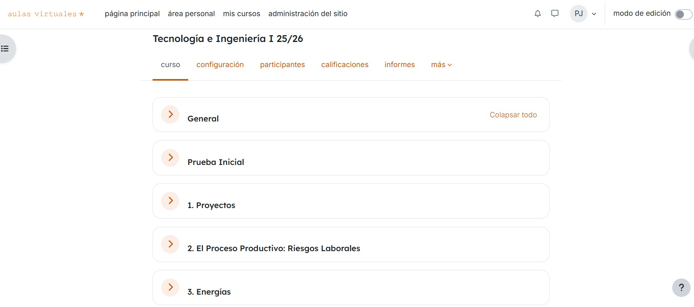

Estructura de la SdA
Se trata de concienciar al alumnado sobre la situación energética actual y la tendencia futura.
Se abordará el tema, primero desde un punto de vista académico mediante la asimilación de conceptos, magnitudes, unidades y su interrelación. Tras esto, gracias a la investigación y la búsqueda de información, se pretende que cada persona reflexione y sea capaz de tener una opinión y tomar decisiones acerca de la implicación de la energía a nivel regional, nacional y mundial desde el punto de vista social, medioambiental y económico.
La duración de la SdA será de 16 sesiones (desde el 21/10/25 al 20/11/25)
Además, todos los recursos, tareas, actividades, notas y avisos serán realizados, informados y organizados desde la plataforma de Educastur Aulas Virtuales. El TEAMS servirá como soporte para realizar avisos excepcionales y urgentes de forma individualizada.
